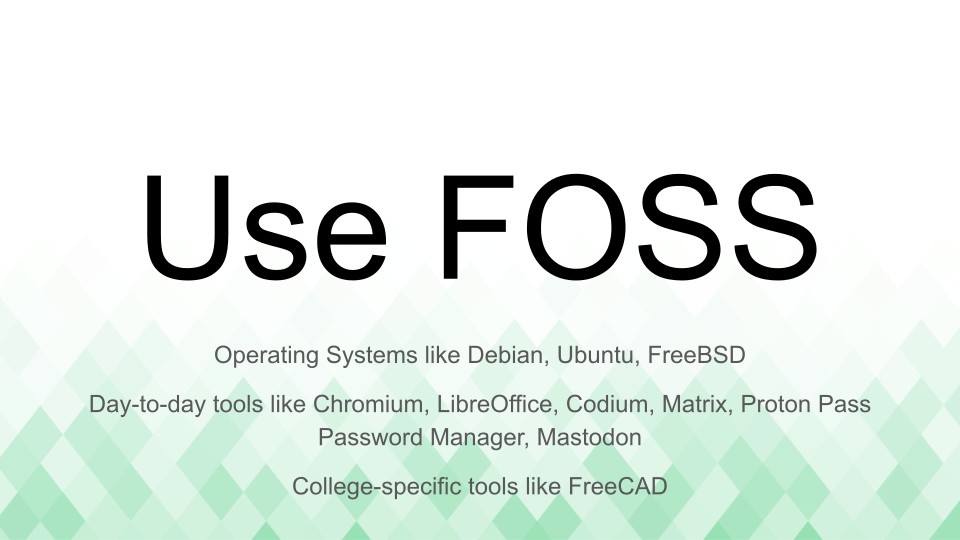
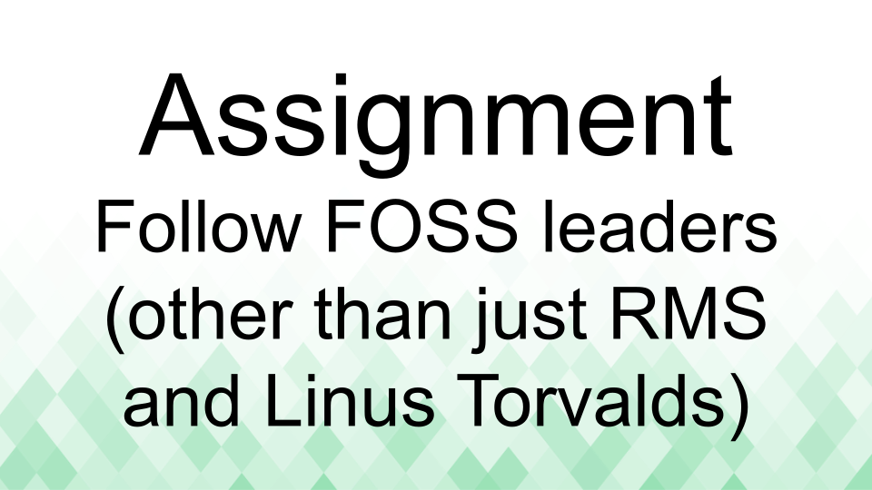
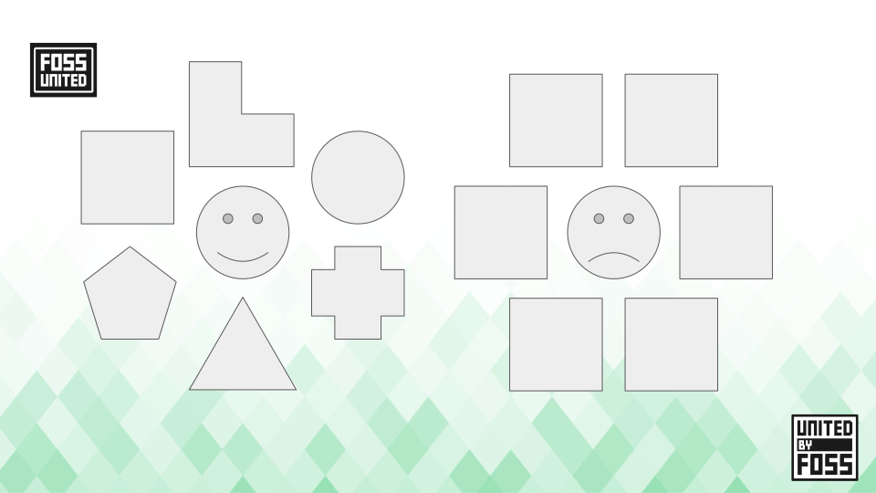

FOSS in Engineering Education
This content was first created for a talk at MEC.Conf, organized by the students of MEC Kochi on 06 October 2024.
FOSS in Engineering Education

Use FOSS
Examples of daily use FOSS projects
Help your friends use FOSS
Assignment #1 : Discover FOSS alternatives
Assignment #2 : Make friends from different academic backgrounds
Assignment #3 : Participate in FOSS communities
Assignment #4 : Learn to speak and write in English, listen to English
Contribute to FOSS
Examples of Engineering-specific FOSS projects
Help your friends contribute to FOSS
Assignment #1: Continue looking for FOSS alternatives

Assignment #5: Actively engage with the FOSS communities
Assignment #6 : Migrate course or lab to FOSS
Assignment #7 : Find problems from different academic problems
Understand FOSS
Open Sources and Producing OSS
Assignment #8 : What is the history of your favorite FOSS project?
Assignment #9 : What is the difference between an MIT license and a GPL license?

Assignment #10 : Follow FOSS leaders
Create FOSS
Examples of Science & Technology-specific FOSS projects
Work with your friends to create FOSS
Assignment #11 : What problems do you care about?

Assignment #12 : What problems do your friends care about?
Talks that influenced this presentation
- Rethinking the Developer Career Path by Randall Koutnik. Also see addition the original blogpost.
- Untold stories from six years working on Python packaging by Sumana Harihareswara. Also see additional links and references
Solving an amorphous problem

The difference between a happy engineer and a sad engineer

References to understand problem solving in FOSS
Thank you
Examples of Engineering courses where FOSS should be applicable
Inspired by the excellent talk Choose Boring Technology and the awe-inspiring work of Maciej Cegłowski.
Built with help from Claude 3.5 Sonnet, content is licensed under CC0 1.0 Universal license.